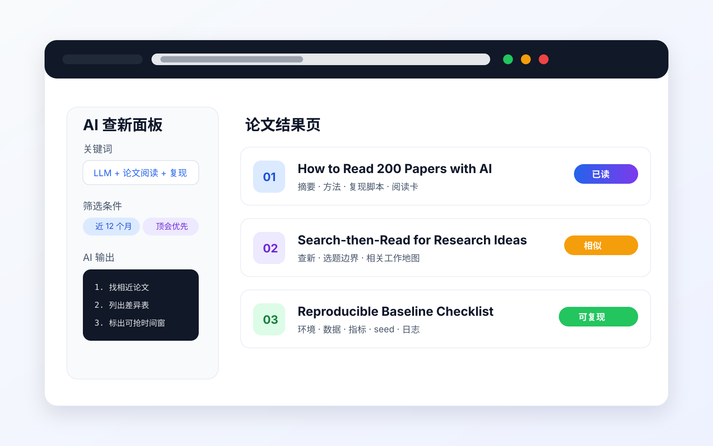
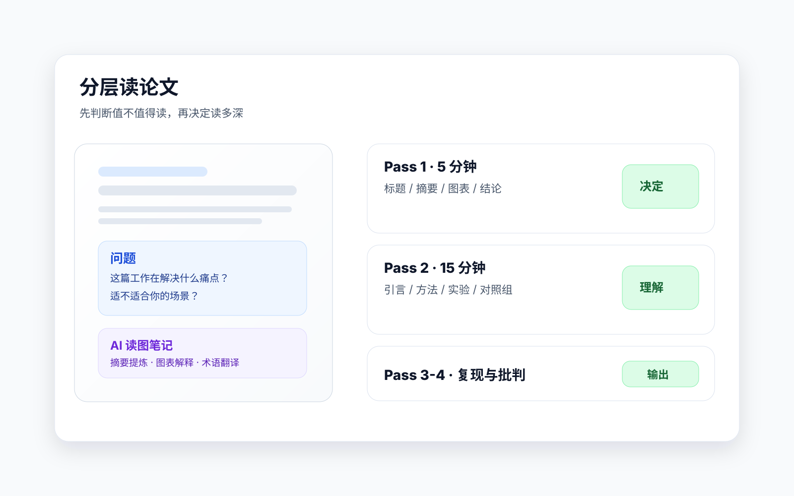
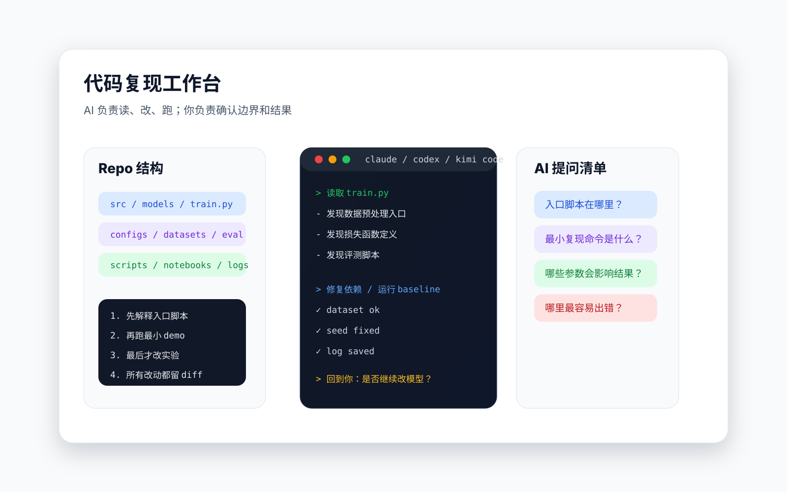
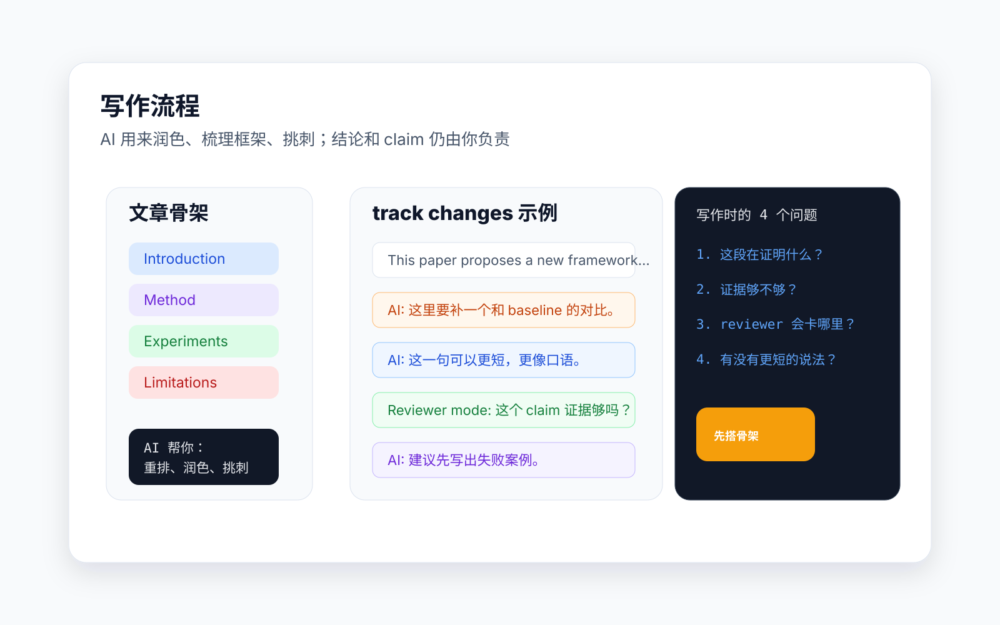
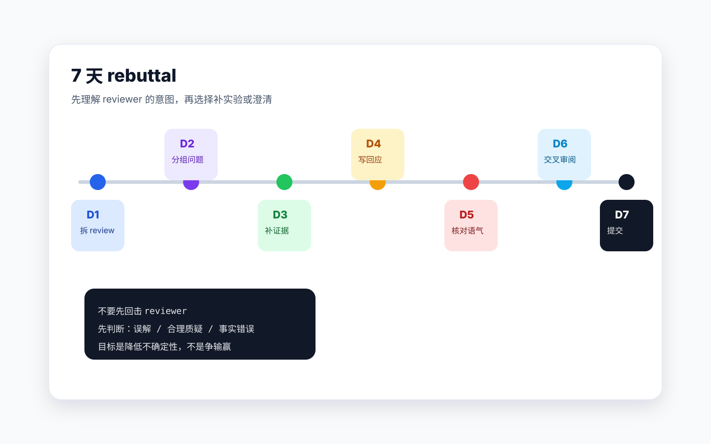

一手入口
arXiv、OpenReview、会议官网、期刊 ToC。先看原始材料，少被二手解读带偏。
AI research starter path
从文献阅读、选题定位、代码复现、论文写作，到顶会投稿和拒稿修稿
00 · big picture
Stanford AI Index 2026 称，组织层面的生成式 AI 采用已经非常普遍。
2025 年自然科学方向约 80,150 篇 AI 相关论文，较 2024 年增长约 26%。
SWE-bench Verified 等编码基准快速接近饱和，代码复现的门槛被重塑。
参考：Stanford HAI, 2026 AI Index Report。
01 · roadmap
02 · literature collection

arXiv、OpenReview、会议官网、期刊 ToC。先看原始材料，少被二手解读带偏。
Papers with Code、GitHub、Hugging Face。优先找能复现的论文。
知乎、CSDN、机器之心、公众号。适合快速补背景，但不能替代原文。
关键词 alert、作者追踪、同领域 benchmark 榜单。每周固定扫一次。
参考：Papers with Code；知乎/CSDN 关于论文阅读与复现的经验帖。
03 · literature reading

3 到 5 分钟判断问题、任务和主要结论。
找清楚 motivation、核心方法和对照组。
把算法细节、训练设置、指标差距拆出来。
用自己的话复述贡献，并找出可改进处。
参考：知乎“读论文七步走”；CSDN“三遍阅读法”；沈向洋/华刚/吴恩达论文阅读建议整理。
04 · topic positioning
你要能说清楚：现有方法在什么场景下不够好，为什么这个缺口重要。
把想法变成一句能被实验验证的假设，而不是一句“我觉得可以”。
持续查新，确认没有相同论文抢先；有相似工作时，快速剖析差异。
搜相近论文、整理差异表、追踪最新 arXiv、模拟 reviewer 质疑。
替你决定“这个方向为什么重要”。这部分必须来自你的领域理解。
能否三句话讲清问题、方法和预期实验；讲不清就继续收敛。
05 · code reproduction

参考：OpenAI Codex docs；Anthropic Claude Code docs；Kimi Code 官方文档。
06 · reproduce SOP
参考：CSDN“论文复现方法论：从阅读到验证的系统化实践框架”。
07 · paper writing

语言润色、段落重组、逻辑提纲、LaTeX 检查、图表说明草稿。
Motivation、实验 claim、相关工作定位、失败案例解释、最终结论。
让 AI 扮演 reviewer 挑刺：贡献不清、实验不足、对比不公平、论证跳跃。
参考：Nature Portfolio AI policy；Nature Methods 2026 editorial；Elsevier/ACM 相关 AI 使用政策。
08 · policy and traceability
参考：European Commission AI Act Article 50 guidelines and Code of Practice, 2026；Nature/ACM AI policy。
09 · conference submission

参考：CVPR 2026 rebuttal Jan 22-Jan 29；ICML 2026 response/discussion instructions；ICLR 2026 OpenReview discussion period。
10 · research rhythm
查新、读核心论文、写一页 problem memo，确认不是重复工作。
复现公开代码，建立数据、指标和日志闭环，固定对照组。
围绕一个核心假设做实验，拒绝无限扩张。
补消融、画图表、反复查新，确认差异和贡献仍然成立。
11 · mindset
先复述问题，再补细节。完全看懂往往发生在复现之后。
每周必须产出阅读卡、实验日志或一页 memo。
拒稿提供的是外部诊断，真正浪费的是不迭代。
和导师、同门、AI reviewer 反复讨论，把问题逼清楚。
12 · action checklist
closing
愿你能在 AI 加速的时代，找到自己的问题，跑通自己的闭环，写出真正站得住的论文。